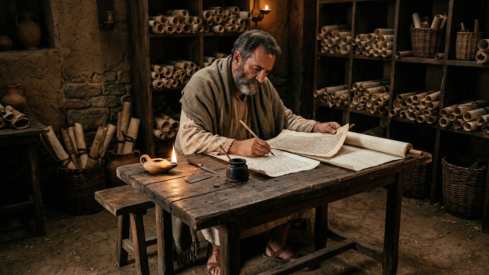
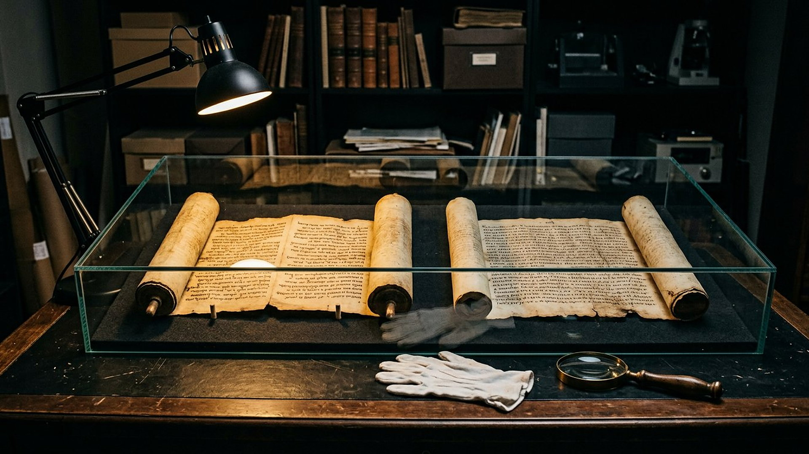
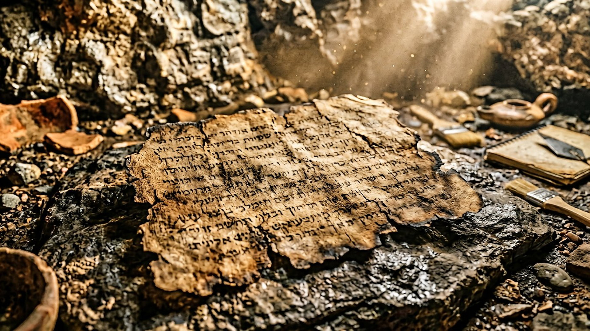

Salle 28 — Manuscrits
La salle des traductions : quand un mot change tout
Quatre mots disputés, quatre dossiers ouverts : ici, la traduction elle-même passe au banc des preuves.
Reconstitution numérique — le traducteur au travail, entre l'hébreu et le grec.
Pourquoi une salle entière pour des mots ?
Parce que les objections les plus fréquentes — sur les forums comme dans les vidéos — ne portent pas d'abord sur l'histoire, mais sur les mots : « Ce n'est pas ce que dit l'hébreu », « La Septante a mal traduit », « Un copiste a changé une lettre ». Ces objections sont sérieuses et souvent à moitié vraies. La méthode du musée est donc exposée ici à nu : chaque cas montre le mot ancien (translittéré), ce que les manuscrits portent réellement, ce que les versions anciennes ont lu, et ce que la salle concernée en retient — ou renonce à en retenir.

La méthode de traduction du musée
Des versions du domaine public
Les citations viennent de traductions françaises anciennes et libres de droits (Crampon 1904, Darby, Segond 1910) ou d'une traduction personnelle fidèle, toujours signalée ; le nom divin y est rendu « Jéhovah » de façon constante. Aucune citation n'est maquillée : quand un mot est disputé, le panneau le dit.
Translittérer, ne pas bluffer
Les mots hébreux ou grecs sont donnés en translittération (almah, kaari, ḥûg) avec leur sens courant, pour que chacun puisse vérifier dans un dictionnaire. Une écriture non latine n'est jamais laissée sans traduction ni explication.
Ne jamais charger un seul mot
Règle appliquée dans tout le musée : aucun dossier ne repose sur un mot contesté. Le Psaume 22 est examiné pour son ensemble (salle 21), Isaïe 7 dans son contexte de signe au roi Acaz (salle 09), et la « sphère » d'Isaïe 40 est classée « à nuancer » (salle 12). Quand la traduction flotte, le badge DÉBATTU monte.

Ce que cette salle démontre — et ne démontre pas
Elle démontre que le texte que nous lisons est ancien et contrôlable : le grand rouleau d'Isaïe (environ 125-100 avant notre ère) porte déjà « ha-almah », et les traducteurs grecs d'Alexandrie lisaient Isaïe des siècles avant les débats modernes. Elle ne démontre pas qu'une traduction ait toujours raison contre l'original : deux des quatre cas ci-dessus se terminent en DÉBATTU assumé. C'est le prix — et la force — d'un musée qui préfère une étiquette honnête à un argument forcé.
Salle 20 : la salle des objections · Salle 21 : les Psaumes messianiques · Salle 27 : l'Égypte d'Isaïe 19
Écouter la salle
Transcription de la narration
Bienvenue dans la salle des traductions. Ici, ce sont les mots eux-mêmes qui passent au banc des preuves. Quatre dossiers vous attendent. D'abord, le mot almah d'Isaïe : jeune femme ou vierge, et que choisirent les traducteurs grecs d'Alexandrie, des siècles avant notre ère ? Ensuite, le Psaume 22 : comme un lion, ou percé, à une lettre près dans les manuscrits anciens ? Puis le nom d'une ville d'Isaïe 19, ville du soleil ou ville de la destruction, sur lequel le plus vieux rouleau ne dit pas exactement ce que dit le texte reçu. Enfin, le cercle d'Isaïe 40, que ce musée refuse de transformer en sphère. La règle de la salle est simple : quand un mot est disputé, l'étiquette débat monte, et aucun dossier ne repose sur un seul mot contesté.